Kure, Hiroshima: things to do, food and stays
Kure · Hiroshima
Kure
Highlighted on the Hiroshima map.
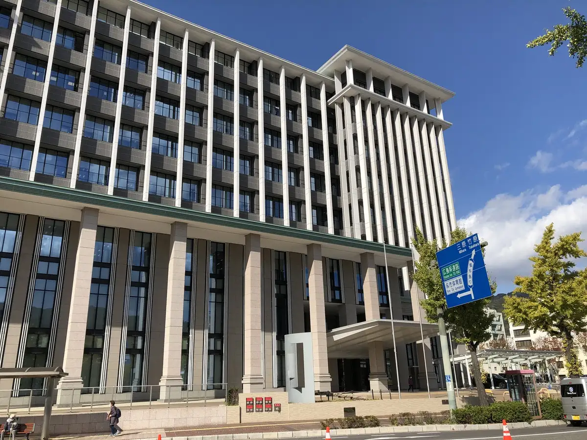
Stay
呉阪急ホテル
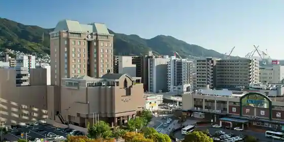
Kure Hankyu Hotel
Hotel in Chuo, Kure with business travelers.
コンフォートホテル呉
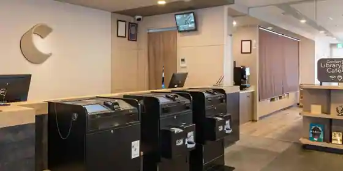
Comfort Hotel Kure
Hotel in Takara, Kure; 2-minute walk from Jrkure Station.
クレイトンベイホテル
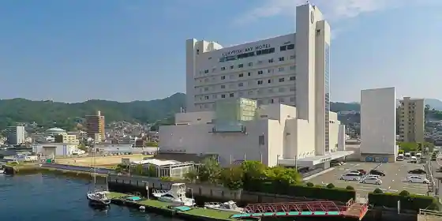
Kureitonbei Hotel
Hotel in Tsukiji, Kure with parking.
VILLA & SAUNA 凪音～NAGIOTO～
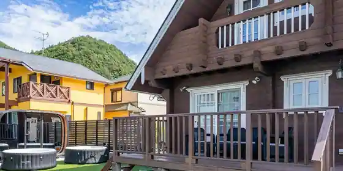
VILLA & SAUNA Nagi Oto ~NAGIOTO~
Inn in Kurahashi, Kure with a sauna.
閑月庵新豊
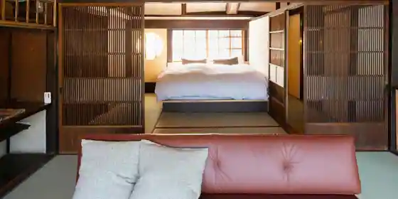
Hima Getsuan Shin Yutaka
ホテルクレシオ呉本通り
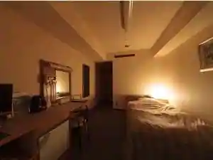
Hotel Kureshio Kure Hondori
Hotel in Hondori, Kure with a large communal bath and business travelers.
ビジネス旅館 野村
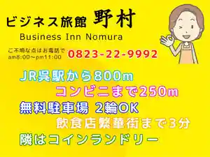
Business Ryokan Nomura
Ryokan inn in Hondori, Kure with parking and business travelers.
呉森沢ホテル
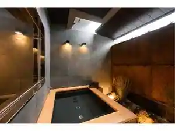
Kure Morisawa Hotel
Hotel in Hon, Kure with open-air baths and a sauna.
TOMAレジデンスホテル本通店
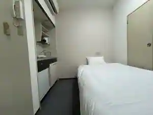
TOMA Rejidensu Hotel Hondori
Hotel in Hondori, Kure with business travelers.
呉ファーストホテル
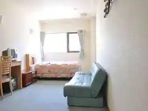
Kure Fasuto Hotel
Hotel in Nakadori, Kure; 6-minute walk from Kure Station.
ビジネスホテルごとう＠ＮＥＴ
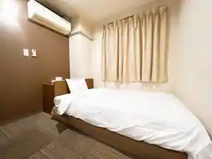
Business Hotel Goto @NET
Hotel in Chuo, Kure with business travelers; 1-minute walk from Jrkure Station.
ビジネスホテル クレ
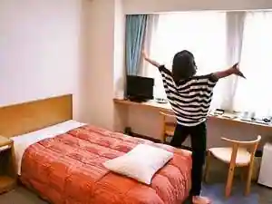
Business Hotel Kure
Hotel in Chuo, Kure with business travelers; 2-minute walk from Jrkure Station.
Dining
中華そば・冷麺 呉龍
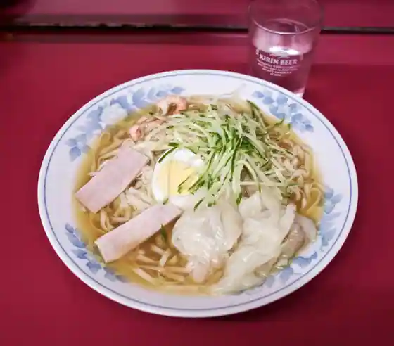
Chuka Soba Reimen Kure Ryu
アミラル
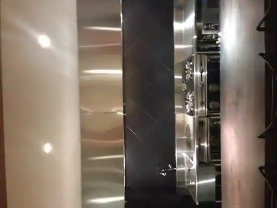
Amiraru
珍来軒
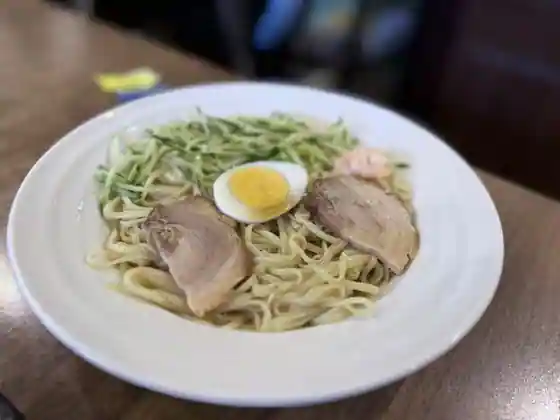
Chin Rai Ken
福住 フライケーキ
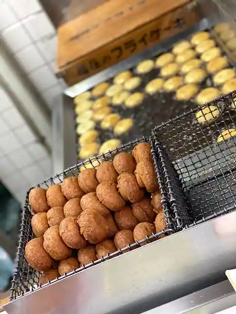
Fukuzumi Furaikeki
關白
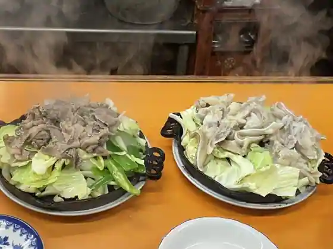
Kanpaku
せとみ
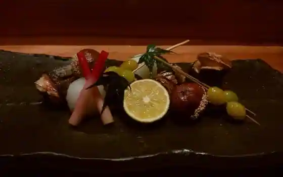
Setomi
麺処 いつか
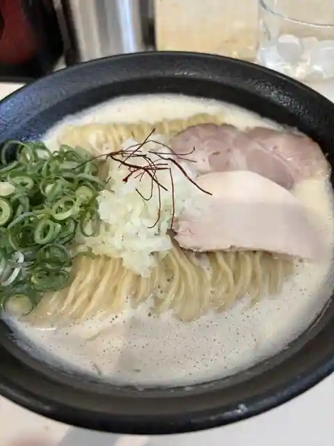
Men Tokoro Itsuka
エーデルワイス洋菓子店 呉本通店
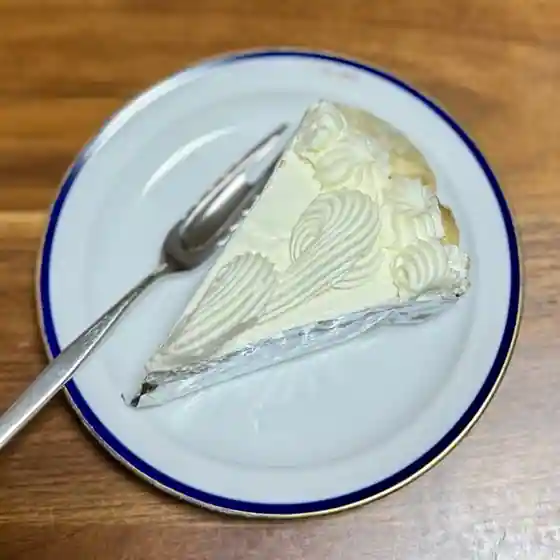
Ederuwaisu Yogashi Kure Hondori
610
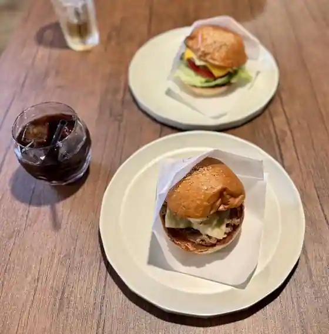
610
呉 ハイカラ食堂
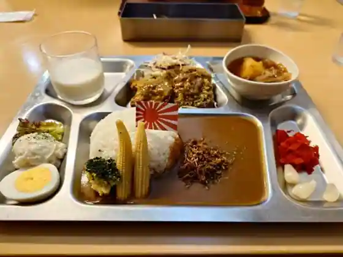
Kure Haikara Shokudo
中華そば モリス
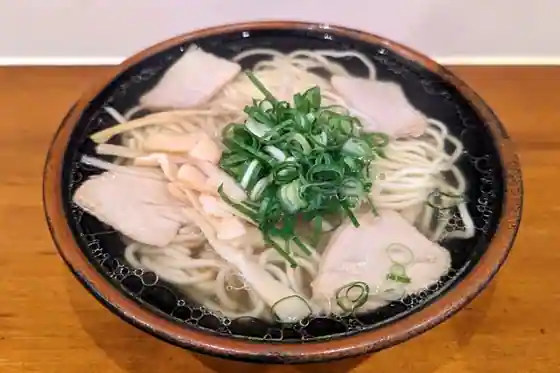
Chuka Soba Morisu
森田食堂
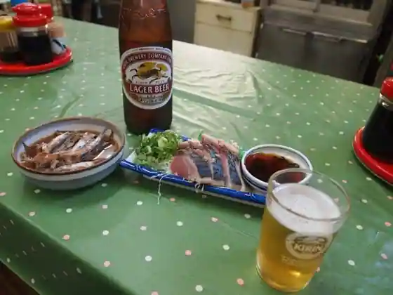
Morita Shokudo
港町珈琲店
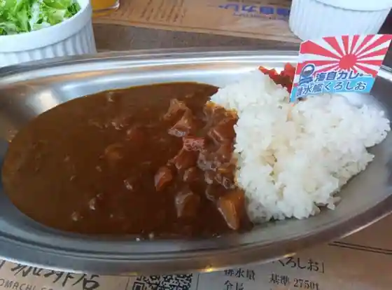
Minatomachi Coffee
昴珈琲店
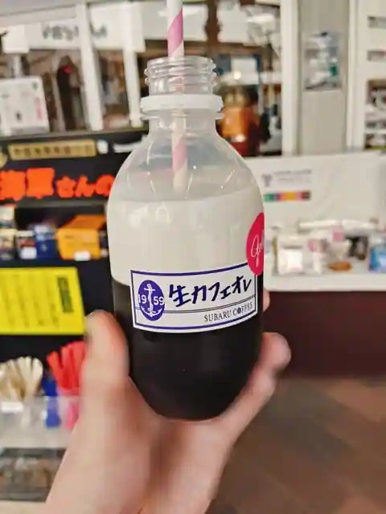
Subaru Coffee
五エ門 呉レクレ店
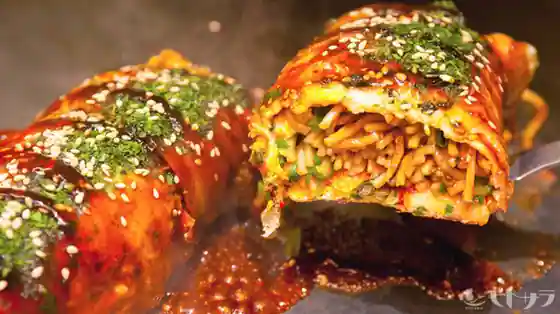
Go E Mon Kure Rekure
田舎洋食 いせ屋
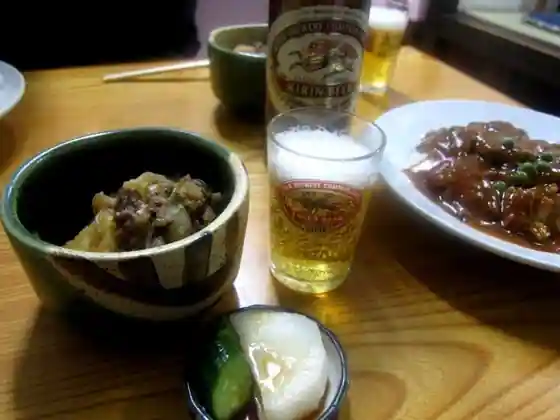
Inaka Yoshoku Ise Ya
うどん屋 だし道楽 警固屋店
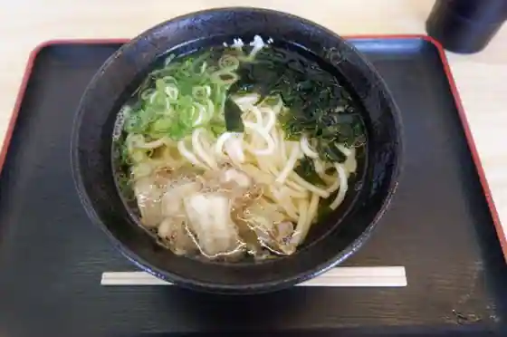
Udon Ya Dashi Doraku Keigo Ya
だし道楽 吉浦店
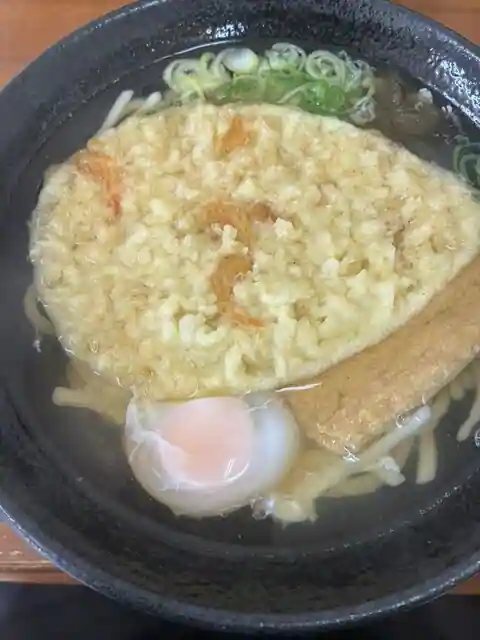
Dashi Doraku Yoshiura
しーらすAQUA
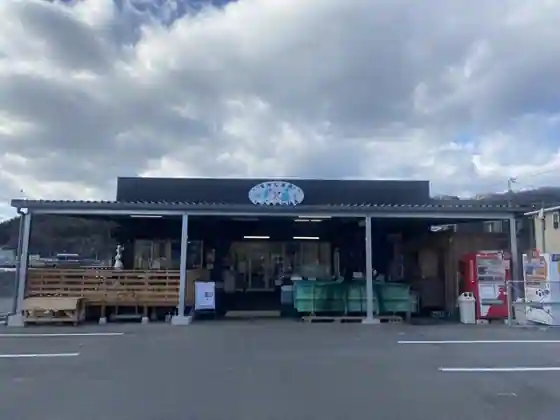
Shirasu AQUA
南州ラーメン
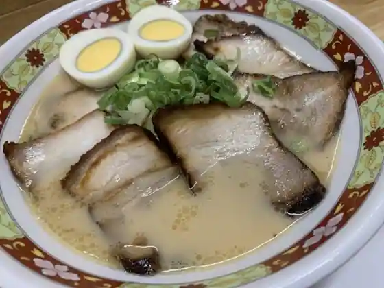
Nanshu Ramen
SeasideCafe BEACON
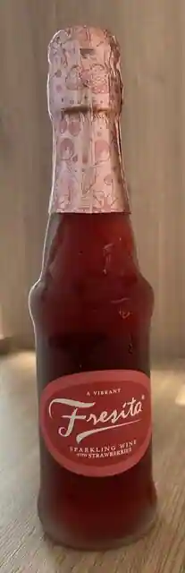
SeasideCafe BEACON
ドライブイン 灘
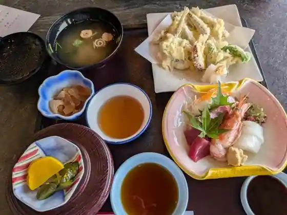
Doraibu Inn Nada
メロンパン 本店
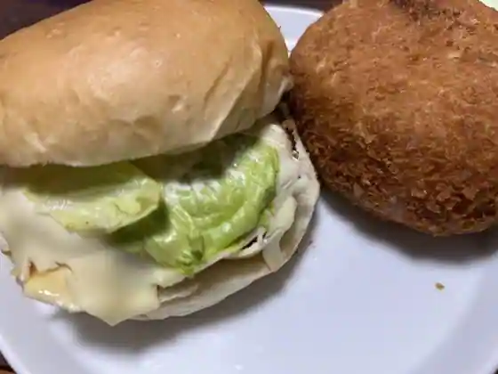
Meron Bakery Hon
鉄板焼 お好み焼 トッキー
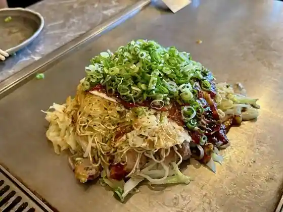
Teppanyaki O Konomi Yaki Tokki
Sights
Yamato Museum
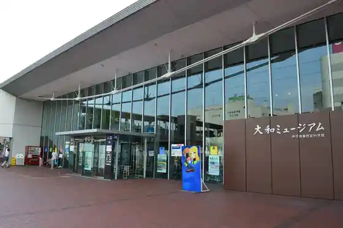
Arei Karasukojima
Ondo Bridge
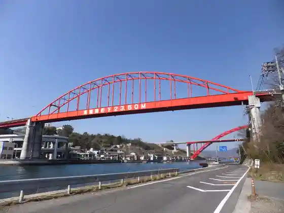
Irifune Yama Memorial Museum
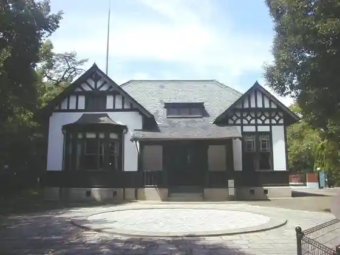
Kure Ritsu Art Museum
Tetsu no Kujira Kan